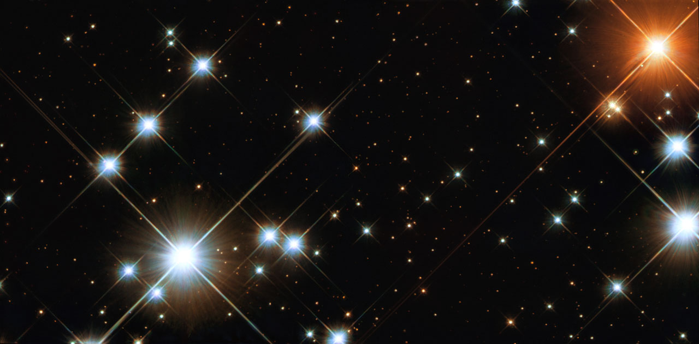

A B-type star is a hot, blue-white main-sequence or evolved star with a surface temperature between approximately 10,000 and 33,000 K. In the Harvard spectral classification system—codified by Annie Jump Cannon in 1901 as the sequence OBAFGKM—the B class is second only to the O class in temperature. B-type stars are distinguished by prominent neutral helium (He I) absorption lines and moderately strong hydrogen Balmer lines; the He I lines reach their greatest intensity near subtype B2, while Balmer absorption strengthens progressively toward cooler subtypes.

NASA/ESA and Jesús Maíz Apellániz
Physical properties. On the zero-age main sequence, B-type stars span roughly 2.75–18 solar masses and 73–44,875 solar luminosities, with energy generation sustained by the CNO cycle. Despite their brilliance, they account for only about 0.125% of all main-sequence stars; B-type stars are preferentially found in the spiral arms of the Milky Way and in OB associations, reflecting main-sequence lifetimes of only 10–100 million years.
Notable examples. Rigel (B8 Ia) is a blue supergiant some 120,000 times more luminous than the Sun. Spica (B1 III–IV) is a binary star with a primary surface temperature near 25,300 K. Regulus (B8) is the nearest bright B-type star at roughly 80 light-years. Achernar (B6 Ve) rotates so rapidly that its equatorial radius exceeds its polar radius by a factor of 1.56, the largest oblateness directly measured for any star.
Subtypes and peculiarities. Be stars are rapidly rotating B-type stars that have shed a circumstellar disc; Balmer lines appear in emission in these objects, and the disc can be transient. Chemically peculiar Bp stars include silicon (Si) and mercury–manganese (HgMn) subgroups showing abnormal photospheric abundances produced by radiative diffusion. He-strong and He-weak varieties exhibit anomalous helium abundances correlated with organised magnetic fields.
Evolution and endpoints. B-type stars leave the main sequence and expand into giants or supergiants, sometimes developing powerful stellar winds or passing through a Wolf–Rayet phase. The most massive end their lives in supernovae, leaving neutron stars or black holes; lower-mass members may ultimately produce white dwarfs. These pathways are traced across the Hertzsprung–Russell diagram in models of stellar evolution.
Historical classification. Williamina Fleming catalogued B-type spectra in the 1890 Henry Draper Catalogue; Antonia Maury recognised that hotter classes should precede cooler ones; and Annie Jump Cannon formalised the OBAFGKM sequence in 1901, establishing the spectral classification system in use today.